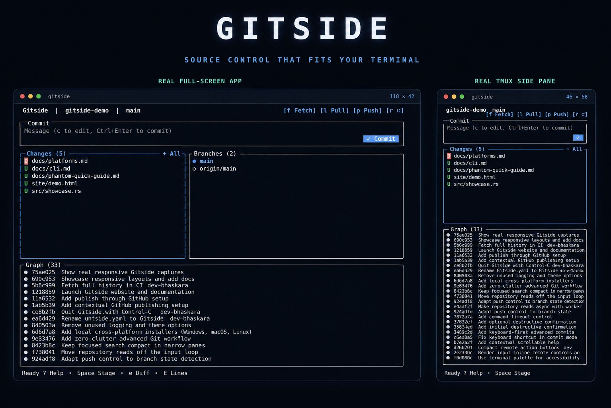

Daily Git, complete
Stage files and hunks, commit, inspect history, branch, stash, sync, rebase, and resolve conflicts.
The familiar flow of VS Code Source Control, rebuilt for keyboards, mouse clicks, full screens, and tall tmux side panes.

Built around your workflow
Gitside keeps the default view quiet. Advanced operations appear contextually when they become relevant, then disappear when the work is done.
Stage files and hunks, commit, inspect history, branch, stash, sync, rebase, and resolve conflicts.
Use the same interface in a wide terminal or a narrow, tall pane. Panels reflow instead of disappearing.
Every mouse target has a keyboard path. Ghostty and SGR terminals get real clickable controls.
Publish repositories and work with pull requests and issues through your existing authenticated GitHub CLI.
Fetch, pull, push, refresh, and GitHub requests run in the background while input stays responsive.
Backgrounds inherit your terminal profile, preserving light themes, dark themes, and transparency.
Get started
Requires Rust 1.85+ and Git 2.30+. GitHub CLI is optional.
$ git clone https://github.com/dev-bhaskar8/gitside.git
$ cd gitside
$ cargo install --locked --path .
$ gitsideOpen source · MIT
0xC87efC9c71C422779F7dbeF14B2Fc4eef94b84fF